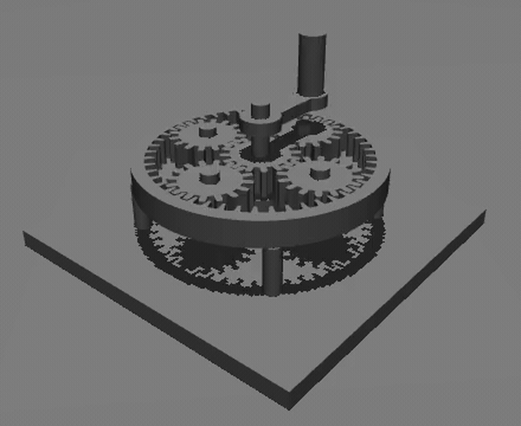
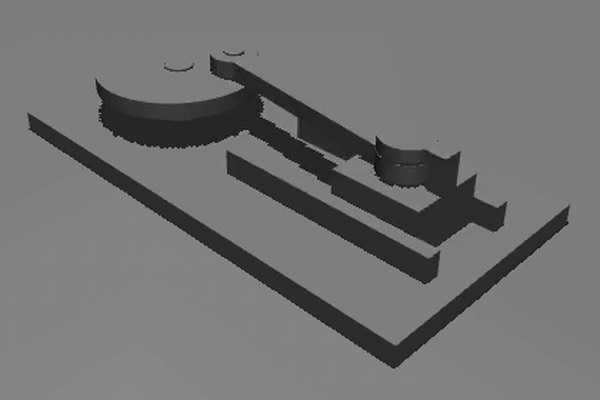

automech / live-run
● RUNNING
Input torque
12.0 N·m
Gear ratio
20 : 1
Task status
PASS
ForgeMind · AutoMech
An AI agent that turns a plain-English goal into CAD, then proves the machine works in physics simulation.
2nd Place · Microsoft Global Intern Hackathon 2026, Hardware AI
Jiayu Li · Harris Wang · Weibing Wang — MIT MEng
The problem
Our own run · ANYmal stand-still test
Pose metric read 2.1°
PASS
Camera saw it tip over
FAIL
Illustration of the run. The vision model caught what the number missed.
The evaluator has to watch the machine work.
ForgeMind · AutoMech
02
Product
You type
“Design a 4:1 planetary reducer”
You get
Runs locally on a laptop CPU. No GPU, Docker or database.

Physics run of the generated reducer · measured 4.0 : 1
ForgeMind · AutoMech
03
How it works
01
02
03
04
05
06
FAIL → retry
FAIL evidence
becomes repair hints
Proof · passed strict review
Measured 4.0 : 1. All four planets orbit and spin.

24.006 mm stroke, stable forward and return.
ForgeMind · AutoMech
04
Why we win
Dimensions share formulas, so parts can’t drift out of fit.
Drive the input, watch the output. Video catches what metrics miss.
Every failure logs collisions, trajectories, video and the fix.
One-task pilot · 3-planet reducer
With executable dependencies
100/100
With independent local values
25/100
Small sample. Scaling up next.
More designs run
More failure data
Better repair hints
Higher pass rate
Data flywheel
gets better with use
ForgeMind · AutoMech
05
Go to market
| First customers | Job we do | How we charge |
|---|---|---|
| Robotics and embodied-AI teams | Fixtures, transmissions, test mechanisms | Seats + simulation usage |
| University research labs | Concepts into reproducible experiment assets | Team or campus license |
| Small hardware teams | Kill infeasible concepts before detailed CAD | Paid pilot, then enterprise |
First milestone
3–5 design partners, measured on engineering hours saved and usable-design rate
ForgeMind · AutoMech
06
Team and next steps
CS, Stats · Microsoft, JD.com, Ericsson
Data Science, Econ · iFLYTEK, DCP
Math, CS · Apple, JD.com
NOW
Core loop working, auditable benchmark, runs locally
3–6 MONTHS
More mechanism types, manufacturing constraints
6–12 MONTHS
Design-partner pilots, team collaboration, enterprise deploy
Our ask
Robotics and hardware design partners · industry mentors · early pilots
github.com/OliviaLJY/AutoMech
07
Appendix · for Q&A
01 · UI
Prompt
Live timeline
3D viewer
Physics video
SSE
02 · APP
Routes
Event stream
Process control
spawn
03 · CORE
CAD maker
Evaluator
Physics sim
API
04 · MODEL
Design
Vision review
Repair
CPU only. No GPU, Docker or database.
Any OpenAI-compatible gateway can be swapped in.
Each stage streams to the browser as it runs.
ForgeMind · AutoMech
A1